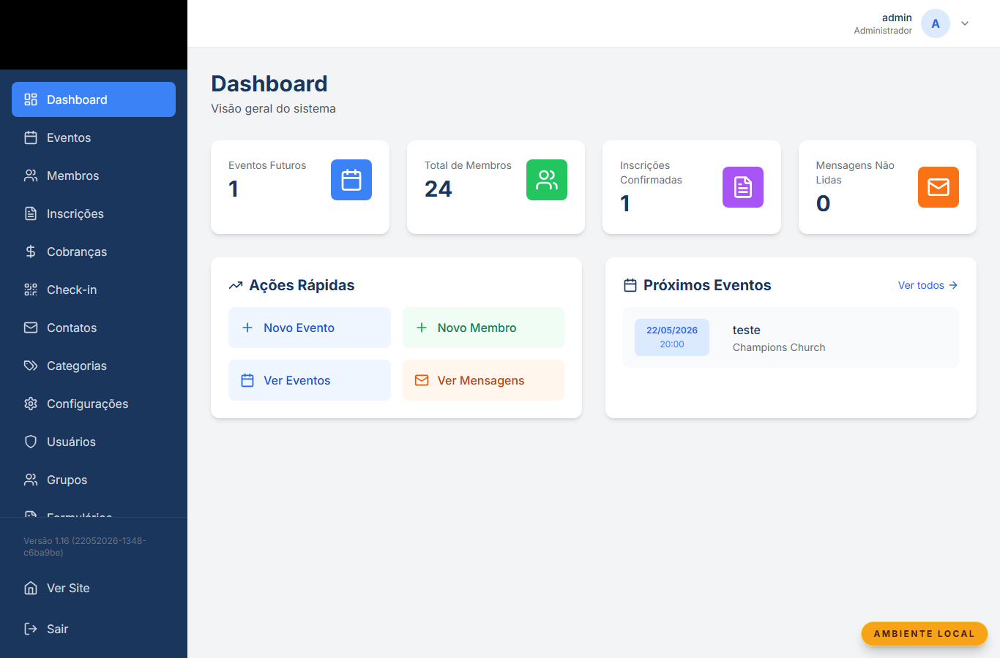
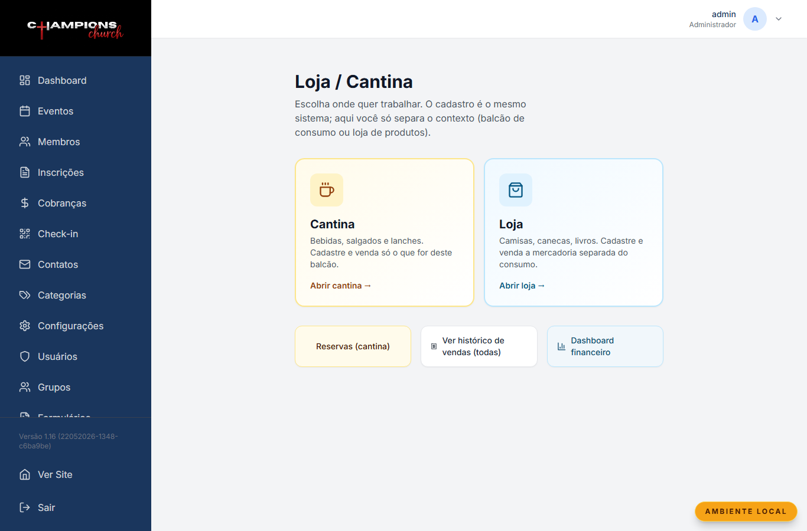
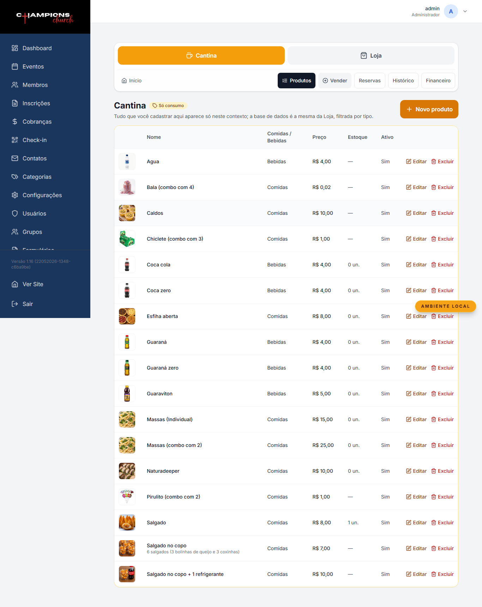
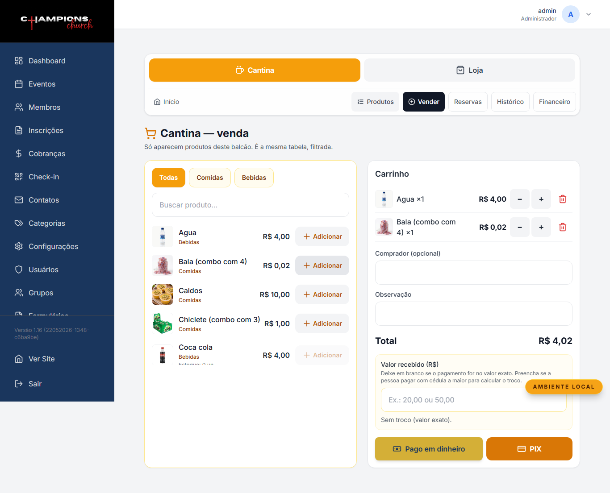
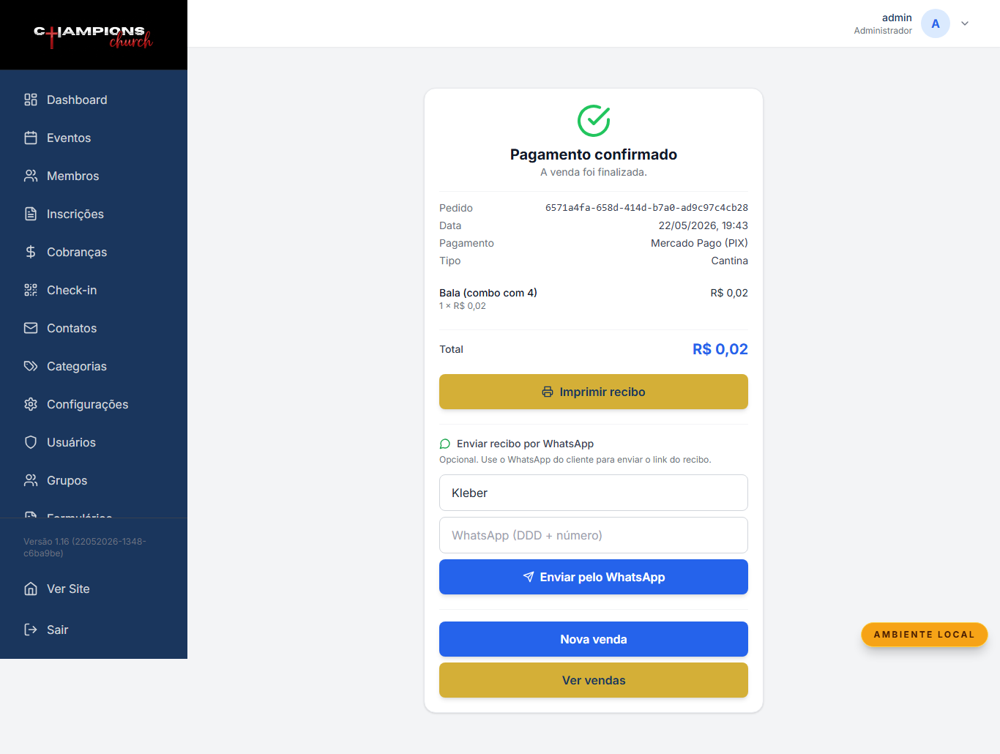
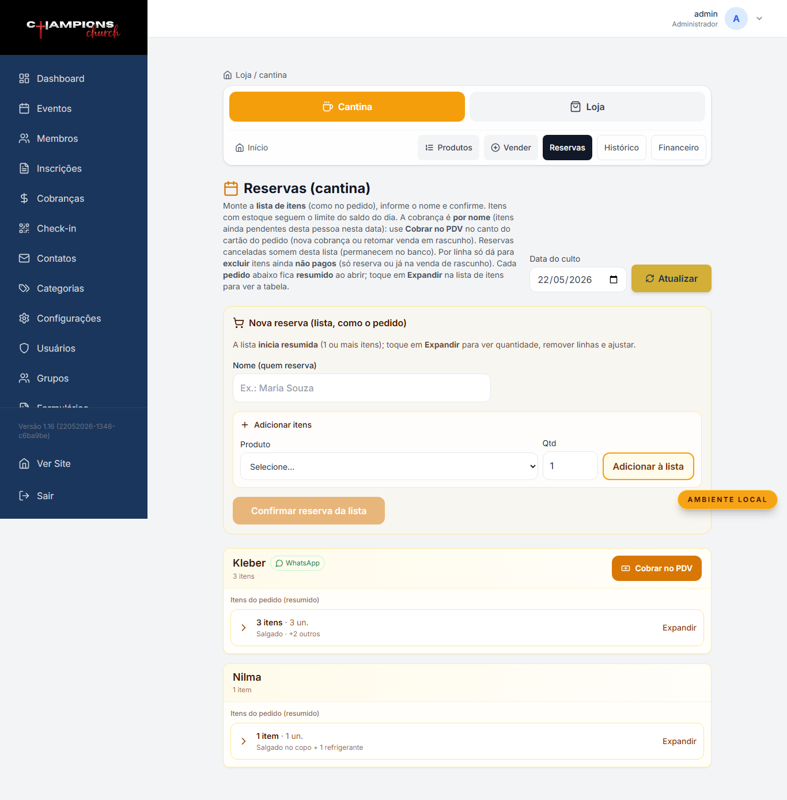
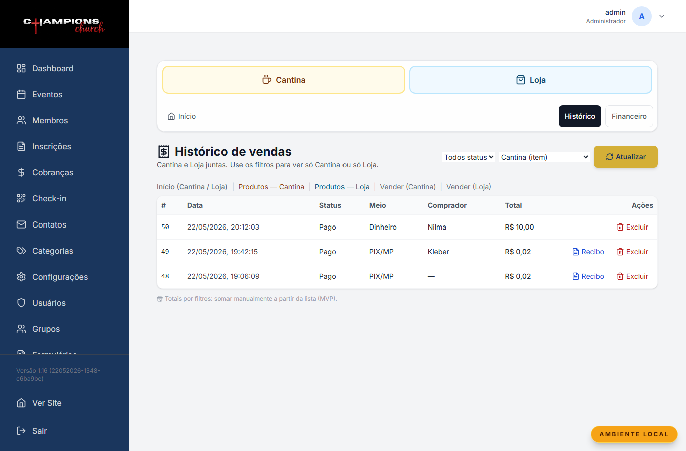
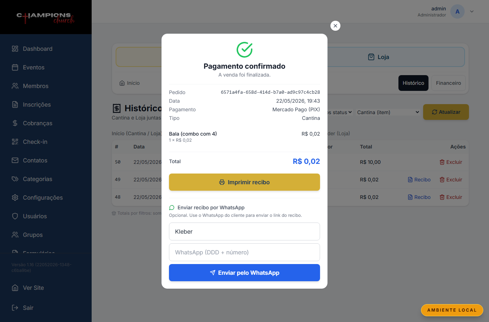
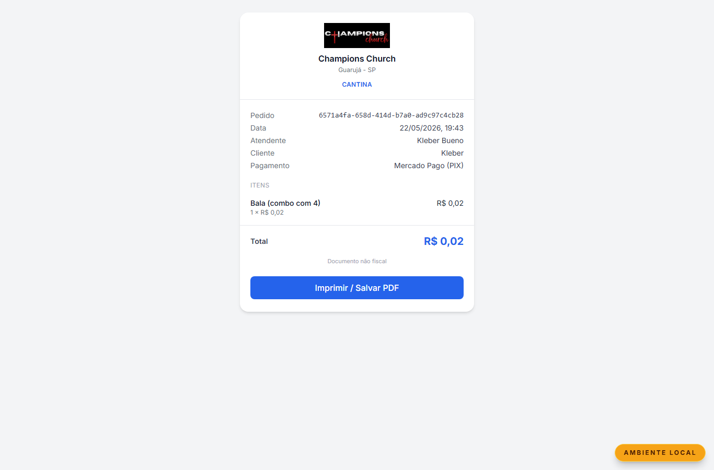
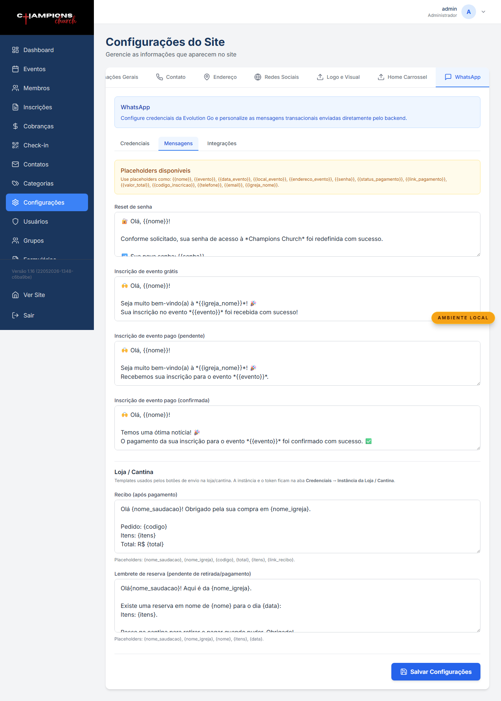

Manual da Cantina
Champions Church — passo a passo para quem atende no balcão
Versão do sistema: maio/2026 · Linguagem simples · Com telas reais
Sumário
- Antes de começar
- Entrar no sistema
- Escolher a Cantina
- Cadastrar produtos
- Vender no balcão
- Receber pagamento (dinheiro, PIX e cartão)
- Reservas
- Histórico, recibo e WhatsApp
- Configurações importantes
- Dúvidas rápidas no balcão
1. Antes de começar
Este manual é para quem trabalha na cantina da igreja — receber pedido, lançar venda, cobrar e entregar.
O sistema separa Cantina (comida e bebida) de Loja (camisetas, livros etc.). Aqui falamos só da cantina.
Importante: use sempre o login que a liderança passou. Não compartilhe usuário e senha com visitantes.
2. Entrar no sistema
- Abra o site da igreja e vá em Admin (ou acesse direto
/admin/login).
- Digite usuário e senha.
- Clique em Entrar.

Tela de login do painel administrativo
3. Escolher a Cantina
No menu lateral, clique em Loja / Cantina. Na tela inicial, escolha o card Cantina.
Ali embaixo também tem atalho para Reservas, Histórico de vendas e Financeiro.

Tela inicial — escolher Cantina ou Loja
Dica de balcão: se você só vende salgado e refrigerante, fique na Cantina. Não precisa abrir a Loja.
4. Cadastrar produtos
Vá em Produtos (menu de cima, dentro da Cantina).
- Novo produto: nome, preço, foto (se tiver), estoque.
- Comida ou bebida: marque o segmento certo — ajuda a filtrar na hora de vender.
- Ativo: produto desligado some do balcão.

Lista de produtos da cantina
5. Vender no balcão
Clique em Vender. Essa é a tela do dia a dia:
- Toque no + do produto que a pessoa pediu.
- Confira o carrinho à direita (ou embaixo no celular).
- Coloque o nome de quem comprou — facilita achar depois no histórico.
- Escolha como vai receber: Dinheiro, PIX/Mercado Pago ou Cartão/Mercado Pago.

Tela de venda (PDV) da cantina com itens no carrinho
Dinheiro
Se a pessoa pagou certinho, pode deixar o campo “valor recebido” vazio. Se deu nota maior, digite quanto recebeu — o sistema calcula o troco.
PIX ou cartão
O sistema abre a tela de pagamento na hora. Mostra os produtos e o total antes de cobrar.
6. Receber pagamento
PIX
- Aparece o QR Code na tela.
- A pessoa paga pelo app do banco.
- Quando cair, a tela confirma sozinha (ou clique em verificar).
Cartão
- Preencha os dados no formulário do Mercado Pago na tela.
- O e-mail é obrigatório — peça para a pessoa informar ou use um e-mail de contato.
Depois de pago
Aparece a confirmação com resumo da venda. Dá para imprimir/salvar PDF e mandar recibo no WhatsApp se a pessoa quiser.

Tela de pagamento confirmado com opção de recibo
7. Reservas
Quando alguém pede para separar e pagar depois (ex.: encomenda para o culto), use Reservas.
- Escolha a data.
- Coloque o nome de quem reservou.
- Adicione os produtos e salve.
- Na hora de cobrar, use Cobrar — vai para a tela de venda/pagamento.
Ao lado do nome tem o botão do WhatsApp para mandar lembrete: “tem reserva pendente, precisa pagar e retirar”.

Tela de reservas da cantina
8. Histórico, recibo e WhatsApp
Ver vendas antigas
Em Histórico, filtre por Cantina para ver só o balcão. Vendas pagas têm botão Recibo.

Histórico de vendas filtrado pela cantina

Modal para ver e enviar recibo pelo WhatsApp
Recibo para o cliente
O link do recibo abre uma página simples no celular da pessoa — dá para salvar ou imprimir.

Recibo público que o cliente recebe
No balcão: pergunte “Quer o comprovante no WhatsApp?”. Se sim, digite o número com DDD e envie.
9. Configurações importantes
Só quem é admin configura. Na aba WhatsApp → Mensagens estão os textos de:
- Recibo da loja/cantina — mensagem com link do comprovante.
- Reserva da cantina — lembrete de reserva pendente.
Em Credenciais, a cantina usa instância e token separados dos eventos — um WhatsApp para loja, outro para inscrições.

Configurações de WhatsApp da loja/cantina
10. Dúvidas rápidas no balcão
“O PIX não confirmou”
- Peça para a pessoa conferir se pagou o valor certo.
- Na tela de pagamento, clique em Verificar pagamento.
- No histórico, use Atualizar pendentes se aparecer.
“Quero cancelar / corrigi errado”
Chame quem tem perfil de admin. Exclusão de venda paga é restrita.
“Cadê a reserva de fulano?”
Reservas → mesma data → procure pelo nome. Se tiver WhatsApp cadastrado, dá para mandar lembrete pelo botão ao lado.
“Isso é nota fiscal?”
Não. É recibo interno da igreja para controle e comprovante simples pro cliente.
Manual gerado automaticamente com telas reais do sistema · Champions Church